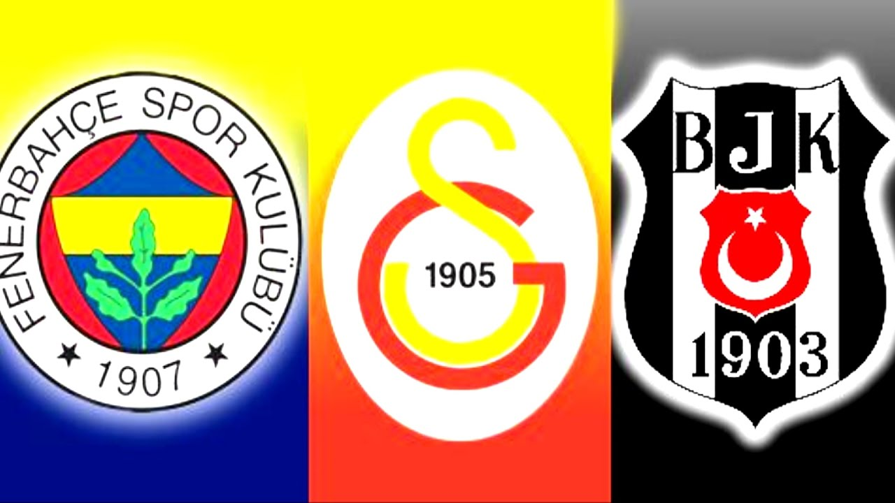
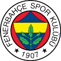
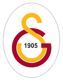
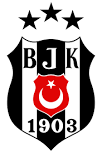

Fenerbahçe futbol takımı, Fenerbahçe Spor Kulübü'nün Süper Lig'de mücadele eden profesyonel futbol takımıdır.[2] Kulübün futbol dışında faaliyet gösterdiği diğer spor dalları basketbol, voleybol, atletizm, boks, kürek, yelken, yüzme ve masa tenisi'dir. Takım, iç saha maçlarını İstanbul Kadıköy'de bulunan 50.530 kişilik Fenerbahçe Şükrü Saracoğlu Stadyumu'nda yapmaktadır.[2] 1907 yılında bir spor kulübü olarak kurulan Fenerbahçe, Türkiye futbol tarihinin en başarılı ve en çok taraftarı olan spor kulüplerinden birisidir.[3][4] Fenerbahçe'nin toplamda 28 Türkiye şampiyonluğu bulunmaktadır.[5][6] Süper Lig'de 19 kez, Millî Küme'de 6, Türkiye Futbol Şampiyonası'nda ise 3 kez birinci olarak Türk futbol tarihinde en çok millî şampiyonluk yaşamış takımdır.[a] Ayrıca, 6 Türkiye Kupası ve 9 Türkiye Süper Kupası şampiyonluğu da bulunmaktadır.[7] 2012-13 sezonunda UEFA Avrupa Ligi'nde yarı finale çıkarak tarihinde bir Avrupa kupasındaki en iyi derecesini elde etti. 1968 yılında şampiyonluk yaşadığı Balkan Kupası Türkiye'nin ve kulüp tarihinin ilk Avrupa kupası oldu. Takma adı Sarı Kanaryalar olan Fenerbahçe'nin Trabzonspor ve Beşiktaş gibi takımlarla rekabeti bulunsa da en büyük rakibi aynı şehirde bulunduğu Galatasaray'dır. Bu iki takım arasında gerçekleşen maçlar Kıtalararası Derbi veya Avrasya Derbisi olarak adlandırılır. Kulübün geleneksel forması düz, sarı lacivert çubuklu forma, beyaz şort ve yanları hafif renkli beyaz çoraplardan oluşur.

Galatasaray futbol takımı, Galatasaray Spor Kulübü'nün Süper Lig'de mücadele eden futbol takımıdır. Galatasaray Spor Kulübü'ne ait olan Galatasaray Sportif Anonim Şirketi, kulübün futbol takımının sahibidir. Galatasaray Spor Kulübü'nün 1997 yılında şirketleşme sürecine girmesinin ardından kurulmuştur. Hisselerinin %55,03'ü Galatasaray Spor Kulübü Derneğine aittir, %44,96'sı ise Borsa İstanbul'da halka açıktır. Türkiye futbol tarihinin en başarılı ve en çok taraftarı olan spor kulüplerinden birisidir.[6][7] 1905 yılında Ali Sami Yen ve arkadaşları tarafından, öğrenci oldukları Galatasaray Lisesi'nde kurulan kulübün ilk spor dalıdır. Şu ana kadar 22 kez Süper Lig şampiyonu olmuş, 18 kez Türkiye Kupası ve 16 kez de Türkiye Süper Kupası kazanmış; 2000 yılında da UEFA Kupası'nı ve UEFA Süper Kupa'yı kazanmıştır. Galatasaray, ayrıca Uluslararası Futbol Tarihi ve İstatistikleri Federasyonu tarafından yapılan "Dünyanın en iyi futbol kulüpleri" istatistik çalışmasında, 2000 Ağustos ayı en iyi takımı[8] 2001 Ocak ayında ise puan sıralamasında 1. sıraya yükselerek ayın lideri olmuştur. Galatasaray 1999-00 sezonunda UEFA Şampiyonlar Ligi gruplarını 3. olarak bitirdikten sonra, katıldığı UEFA Kupası'nı yenilmeden kazanan tek takımdır. 1999-2000 yılında, UEFA Kupası finalinde İngiltere'nin Arsenal kulübünü penaltılarda 4-1 yenerek, bir Avrupa Kupası kazanan ilk ve tek Türk futbol kulübü olmuştur. Galatasaray aynı yıl; Süper Kupa'yı da Real Madrid'i 2-1 yenerek kazanmıştır.
